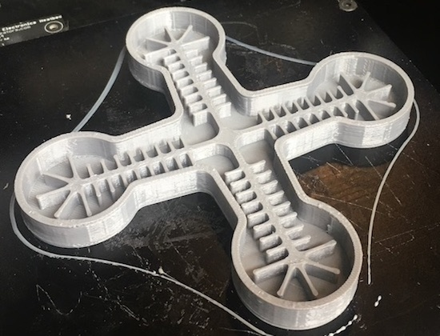
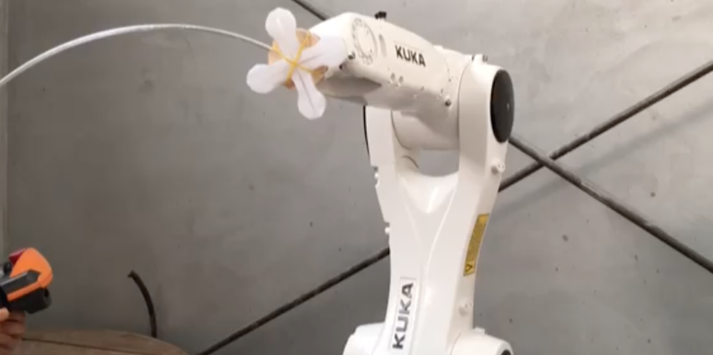

1. OCR implementation, multi-class classification (Coursera)
.png)
data set sample
training set prediction (1)
training set prediction (2)
https://github.com/ino-jeong/Portfolio/tree/master/OCR(multiclass_classification)
Training set accuracy : 94.86%
Octave(추천) 또는 Matlab에서 main.m 실행
구현환경 : GNU Octave 3.8, Mac OS
Coursera Machine Learning 과정 구현 과제
Training set : 20 X 20 pixel, grayscale, 5000 examples of handwritten digits
Model : Multi-class classification
Cost function 및 Training / Prediction 과정 구현 :
- lrCostFunction.m
- oneVsAll.m
- predictOneVsAll.m
2. OCR implementation, neural-net (Coursera)
training set prediction (1)
training set prediction (2)
https://github.com/ino-jeong/Portfolio/tree/master/OCR(neural_net)
Training set accuracy : 95~96% (up to random initialization)
Octave(추천) 또는 Matlab에서 main.m 실행
구현환경 : GNU Octave 3.8, Mac OS
Coursera Machine Learning 과정 구현 과제
Training set : 20 X 20 pixel, grayscale, 5000 examples of handwritten digits (1번과 동일 set)
Model : Neural Net, 3 layer (1 hidden layer)
Layer 구성 및 backpropagation 구현 :
- sigmoidGradient.m
- nnCostFunction.m
3. MNIST with CNN implementation
test set prediction (1)
test set prediction (2)
contents 1
contents 2
4. K-means clustering (Coursera)
.png)
before k-means clustering
(same color means they treated as same group)
.png)
after 8-iteration of k-means
(same color means they treated as same group)
https://github.com/ino-jeong/Portfolio/tree/master/k_means
Octave(추천) 또는 Matlab에서 main.m 실행
Basic k-means clustering implementation
구현환경 : GNU Octave 3.8, Mac OS
Coursera Machine Learning 과정 구현 과제
Model : K-means
K-means clustering algorithm 구현 (finding 3 clusters in examples) :
- computeCentroids.m
- findClosestCentroids.m
- kMeansInitCentroids.m
5. Soft Robotic Gripper Fabrication

3d printed gripper mold

attached on robotic arm
.png) Robot arm : (Kuka) KR 6 R900 sixx KR AGILUS
Soft robotic gripper :
Material : Ecoflex 00-30 silicone
Dimension : W 135mm x L 135mm x H 10 mm
Air powered
Mold : 3d printed (by ultimaker), pla
Office paper used for inelastic side (inner side) constrainer
Robot arm : (Kuka) KR 6 R900 sixx KR AGILUS
Soft robotic gripper :
Material : Ecoflex 00-30 silicone
Dimension : W 135mm x L 135mm x H 10 mm
Air powered
Mold : 3d printed (by ultimaker), pla
Office paper used for inelastic side (inner side) constrainer